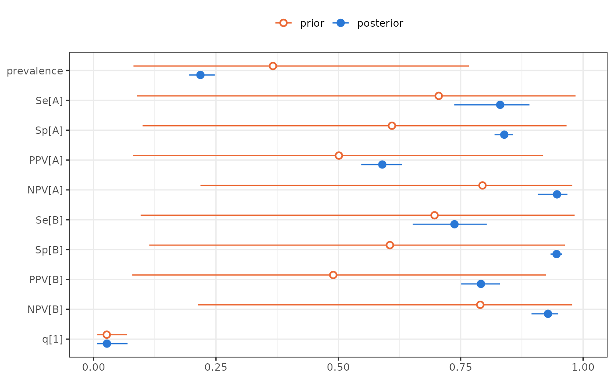

Fits the same model again sampling from the prior alone, and compares the
prior and posterior distributions of the accuracy of the tests (or of
rules) and, for the saturated model, of the parameters the data cannot
estimate: the proportion of diseased in never-verified profiles (q) and
the log odds ratio of verification (beta). This shows how much each
result depends on the data and how much on the assumptions: a posterior
equal to its prior is not learned from the data. For the structured models
it is also a prior simulation, which shows the prior that their priors induce on the
accuracy.
Arguments
- fit
A model fitted with
baysesp().- rules
Rules, see
rule_accuracy(). By default the individual tests, as intest_accuracy().- level
Probability of the credible intervals.
- ...
Arguments passed to
baysesp()for the prior fit, such aschainsandseed.
Value
A data frame of class prior_posterior with columns quantity,
distribution ("prior" or "posterior"), mean, median, lower
and upper. It has a plot() method.
Details
The accuracy is defined for a rule \(R\), which declares a subject positive or negative from the response profile \(t\), the vector of the results of the tests: \(r_R(t) = 1\) if the profile is declared positive, 0 otherwise. A single test is the rule "this test is positive". The quantities depend on the prevalence \(\pi = P(D = 1)\) and on the distribution of the profiles in the diseased, \(\theta_{1,t} = P(T = t \mid D = 1)\), and in the healthy, \(\theta_{0,t} = P(T = t \mid D = 0)\):
sensitivity (
Se): $$Se_R = P(R \textrm{ positive} \mid D = 1) = \sum_t r_R(t)\, \theta_{1,t},$$ the proportion of diseased subjects that the rule declares positive. It is also called the true positive rate (TPR);specificity (
Sp): $$Sp_R = P(R \textrm{ negative} \mid D = 0) = 1 - \sum_t r_R(t)\, \theta_{0,t},$$ the proportion of healthy subjects that the rule declares negative; \(1 - Sp_R\) is the false positive rate (FPR);positive predictive value (
PPV): $$PPV_R = P(D = 1 \mid R \textrm{ positive}) = \frac{\pi\, Se_R}{\pi\, Se_R + (1 - \pi)(1 - Sp_R)},$$ the probability that a subject declared positive is diseased;negative predictive value (
NPV): $$NPV_R = P(D = 0 \mid R \textrm{ negative}) = \frac{(1 - \pi)\, Sp_R}{(1 - \pi)\, Sp_R + \pi\, (1 - Se_R)},$$ the probability that a subject declared negative is healthy.
Sensitivity and specificity describe the rule and do not depend on the
prevalence; the predictive values describe what a result means for a
subject, and change with the prevalence of the population. For combined
rules, such as any_positive(), the accuracy depends on the joint
distribution of the tests, not only on their individual sensitivities and
specificities.
Each quantity is computed from every posterior draw of \(\pi\),
\(\theta_0\) and \(\theta_1\). The results report its posterior mean
and median and an equal-tailed credible interval with probability level.
Examples
# \donttest{
set.seed(1)
d <- simulate_study(n = 2000, prevalence = 0.2,
sensitivity = c(A = 0.9, B = 0.8),
specificity = c(A = 0.85, B = 0.95),
verification_prob = c(0, 0.9, 0.9, 1))
d <- baysesp_data(d, tests = c("A", "B"), verified = "verified", disease = "disease")
fit <- baysesp(d, saturated(unverified_prevalence_prior = elicit_beta(0.03, 0.06)),
seed = 1)
pp <- prior_posterior(fit, seed = 1)
pp
#> quantity distribution mean median lower upper
#> 1 prevalence prior 0.38272985 0.36638189 0.081516795 0.76663042
#> 2 prevalence posterior 0.21921887 0.21833326 0.195205493 0.24764361
#> 3 Se[A] prior 0.64641265 0.70507608 0.089134045 0.98463091
#> 4 Se[A] posterior 0.82612115 0.83060861 0.736908872 0.89047324
#> 5 Sp[A] prior 0.58463389 0.60952327 0.100142623 0.96611953
#> 6 Sp[A] posterior 0.83875184 0.83894675 0.819089915 0.85702281
#> 7 PPV[A] prior 0.50092552 0.50112232 0.080332134 0.91813277
#> 8 PPV[A] posterior 0.58946648 0.58976968 0.546740369 0.62957585
#> 9 NPV[A] prior 0.73771535 0.79446788 0.218449133 0.97787068
#> 10 NPV[A] posterior 0.94454483 0.94667101 0.907684607 0.96789705
#> 11 Se[B] prior 0.64203562 0.69644791 0.096222087 0.98267789
#> 12 Se[B] posterior 0.73436814 0.73729086 0.651813865 0.80313237
#> 13 Sp[B] prior 0.58450724 0.60528155 0.113722805 0.96280904
#> 14 Sp[B] posterior 0.94551773 0.94578176 0.933589357 0.95648060
#> 15 PPV[B] prior 0.49671964 0.48960728 0.078724583 0.92418712
#> 16 PPV[B] posterior 0.79069239 0.79136785 0.750914885 0.83016648
#> 17 NPV[B] prior 0.73171462 0.78992728 0.213068574 0.97744781
#> 18 NPV[B] posterior 0.92653231 0.92829749 0.894481579 0.94916144
#> 19 q[1] prior 0.02978592 0.02692379 0.007255998 0.06799049
#> 20 q[1] posterior 0.03001073 0.02728707 0.006945652 0.06931085
plot(pp)

# }